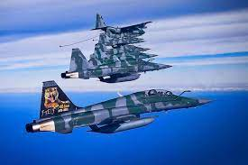
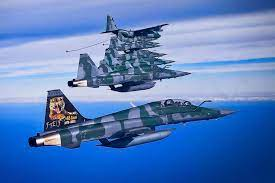

O Ministério da Aeronáutica foi criado em 20 de janeiro de 1941
por meio do Decreto-Lei n° 2.961, assinado pelo então
presidente Getúlio Vargas. Transferiu militares, servidores
civis, aviões e instalações da Marinha, do Exército e do
Ministério da Aviação e Obras Públicas para a Aeronáutica, com
a denominação de Forças Aéreas Nacionais.
O Ministério impusionou a aviação militar e civil no
Brasil, um desafio para Joaquim Pedro Salgado Filho, o
primeiro a assumir o cargo de Ministro da Aeronáutica.
No mesmo ano, 1941, o presidente assinou o Decreto-Lei 3.
302, criando a nova denominação Força Aérea Brasileira, com
sigla FAB, dando individualidade à Força, pela evidência da
sua nacionalidade.
história começou em 1941 com a criação do Ministério da
Aeronáutica. Nesses anos, muitas mudanças ocorreram. A FAB
combateu na Segunda Guerra, desenvolveu tecnologias,
integrou o País, foi reconhecida como responsável por um dos
melhores controles de tráfego aéreo do mundo,
modernizou aeronaves e equipamentos e atuou junto à
população civil.
.jpg) 
